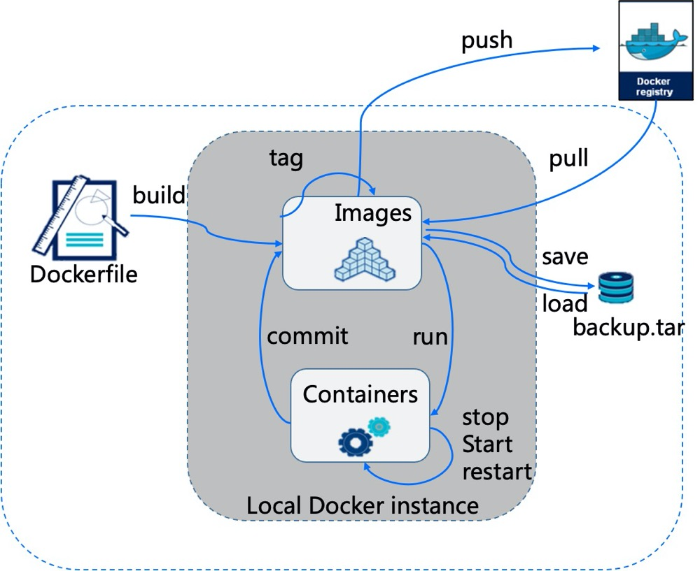

Introduction
容器&Docker入门
个人简介
容器故事
能解决什么问题
优势
镜像概念
容器概念
仓库概念
Docker 安装
安装说明
CentOS安装
Windows安装
Macbook安装
容器&docker入门实验
Docker命令
基础命令
镜像命令
容器操作命令
容器管理命令
资源命令
wordpress博客系统
python文件下载系统
Docker 镜像
Dockerfile
个人仓库
Dockerfile最佳实践
Docker 网络
Docker 存储
数据卷
挂载卷
Docker Compose
Docker Swarm
[Kubernetes入门.md]
Published with GitBook
Docker命令
Docker 的基本操作

results matching "
"
No results matching "
"